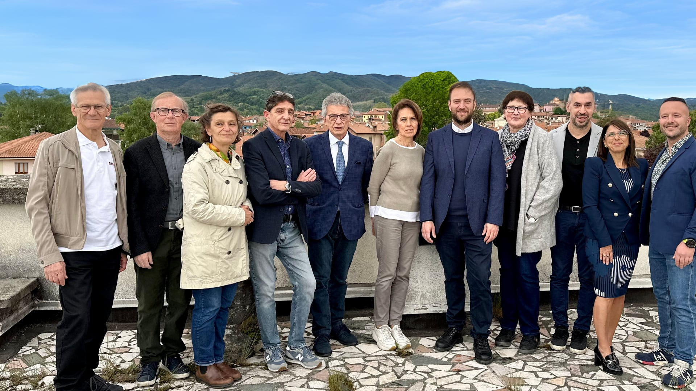
Nel 2024 ripartiamo dai cittadini, dal dialogo, dalla salvaguardia del nostro territorio, dalla cura dell'ambiente, della comunità, dei giovani e delle famiglie, dall'attenzione per gli anziani, dalla scuola, dalla cultura, dalle competenze e dalle eccellenze che hanno reso famosa Maggiora.
La Lista Civica ViviAMO MAGGIORA è una squadra di persone pronte a mettersi in gioco per il bene del paese, offrendo grandi qualità umane, esperienza e competenza. Il nostro è il paese delle eccellenze: l'Antonelli, lo sport, il vino, la musica, le opere sociali e le manifestazioni locali. Maggiora deve tornare ad essere un luogo bello da vivere, dove le famiglie possano crescere al sicuro e dove gli anziani possano vivere in serenità. Maggiora si trova in una posizione strategica e può offrire molto dal punto di vista dell'enogastronomia, della natura, della cultura e dell'intrattenimento, proprio in un momento in cui il territorio sta vivendo una forte espansione nel settore del turismo. Bisogna tornare ad essere protagonisti dell'Alto Novarese. Ci vuole una politica chiara per lo sviluppo economico e sociale del Comune. Serve un'adeguata valorizzazione del patrimonio culturale e ambientale. Serve apertura al dialogo sia all'interno del paese che con le realtà circostanti, evitando gli atteggiamenti che hanno causato l'isolamento del nostro Comune, con i relativi rincari che colpiranno tutti i cittadini, specie quelli più fragili. Maggiora rischia di rimanere al palo, negli ultimi anni abbiamo perso opportunità come i fondi del PNRR e quelli del Lascito Fornara che sono ancora fermi. Vi è poi la grave questione della discarica di via Gobetti. Abbiamo dovuto constatare, con stupore ed amarezza, che l'Amministrazione non ha voluto ascoltare i Cittadini. Ricordiamo come nel 2011 la lista "Insieme per Maggiora" ribadiva per iscritto nel suo programma elettorale "la contrarietà ad ospitare sul nostro territorio eventuali discariche". Nonostante queste promesse, si è subito concessa la realizzazione di una discarica "in deroga" per un cosiddetto "recupero ambientale". Deroga dopo deroga, dalla contrarietà alle discariche siamo arrivati alla promozione di un impianto che accoglierà rifiuti da tutto il Nord Ovest! La questione della discarica non costituisce semplicemente un problema per le gravissime conseguenze che avrà su attrattiva e valore, non solo immobiliare, del territorio e per le preoccupazioni sulla salute: è il sintomo di un approccio basato esclusivamente sull'iniziativa del singolo e non sulla comunicazione, sul lavoro di squadra e l'ascolto dei Cittadini. Il caso discarica è l'emblema di un modo di governare privo di direzione politica chiara e lungimirante, che vede il territorio come qualcosa che può essere svenduto, senza riguardi per il nostro patrimonio paesaggistico, geologico, culturale, agricolo ed enologico e senza ascoltare la volontà fermamente manifestata dai Cittadini. La decisione di ampliare la discarica costituisce un duro colpo per il nostro paese, che va oltre la questione ambientale: è stato compromesso lo sviluppo economico e la nostra comunità è stata gravemente ferita. Possiamo risollevarci solo se tutti insieme intraprendiamo con decisione una nuova direzione! A Maggiora serve, con urgenza, una nuova Amministrazione, che sia veramente vicina alla Comunità e che dia la priorità ai suoi membri più fragili, che sostenga le famiglie, le imprese e le Associazioni, ripartendo dalle sue eccellenze. Il modello per cui una o due persone gestiscono tutto il paese è fallimentare. Serve una squadra di persone disposte a mettersi in gioco per il Bene Comune. Lavorando insieme con spirito di cooperazione, trasparenza e onestà è possibile costruire un futuro migliore per Maggiora. Il nostro programma, "10 passi per rilanciare MAGGIORA", è molto ambizioso, ma vogliamo accettare la sfida con determinazione e responsabilità. Se anche tu sogni una Maggiora nuova, aperta, pulita, trasparente, che faccia parlare di sé per le proprie bellezze e le proprie eccellenze, unisciti a noi!Discarica Inerti
Monitorare costantemente la discarica di via Gobetti, la qualità di suolo, aria e acqua anche attraverso il lavoro di tecnici qualificati incaricati dal Comune. Tenere sotto controllo il traffico pesante su via Gobetti per garantire la sicurezza ed il rispetto delle norme e degli accordi in vigore.
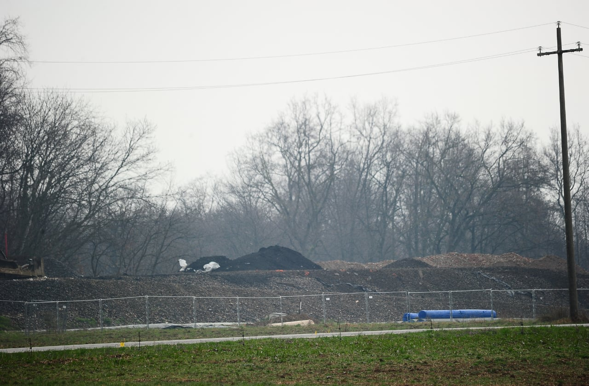
Amministrazione Aperta
Informare periodicamente la Comunità di Maggiora sull’operato dell'Amministrazione attraverso un notiziario. Attivare uno Sportello Ascolto Cittadini presso gli Uffici comunali.
Gestione Rifiuti e Area Ecologica
Ampliare gli orari di apertura dell'Area Ecologica in uso, estendendo al sabato la possibilità di conferire calcinacci. Vietare l'installazione a Maggiora di aziende inquinanti e nocive per la salute e il territorio, con variante alle Norme di attuazione del Piano Regolatore. Trovare soluzioni, anche tramite convenzioni con i Comuni vicini, per ottimizzare la gestione dei rifiuti, riducendo i costi per i Cittadini.
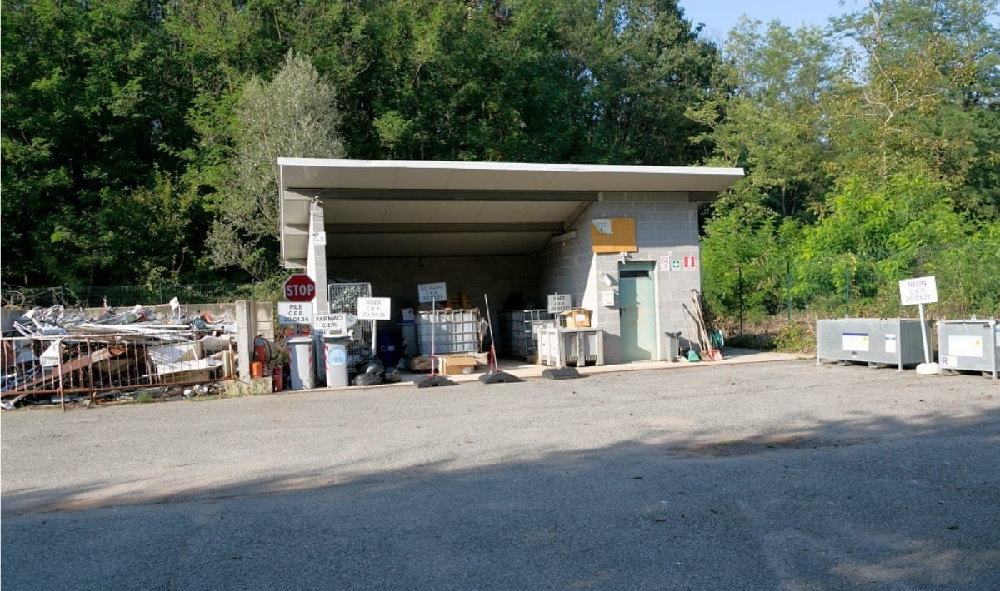
Opere Pubbliche
Completare il rifacimento delle pavimentazioni stradali del centro storico con materiali di pregio. Procedere con un monitoraggio delle aree a parcheggio e istituirne appositi per disabili. Programmare la manutenzione ordinaria delle strade comunali del centro e delle aree più esterne. Procedere all'asfaltatura delle vie malmesse. Valorizzare l'area-giochi di via Dante con coperture ombreggianti per le panchine. Realizzare un piano per il recupero di edifici e aree critiche (Ricovero, Tensostruttura). Affrontare e risolvere problemi di sicurezza stradale (Circonvallazione).
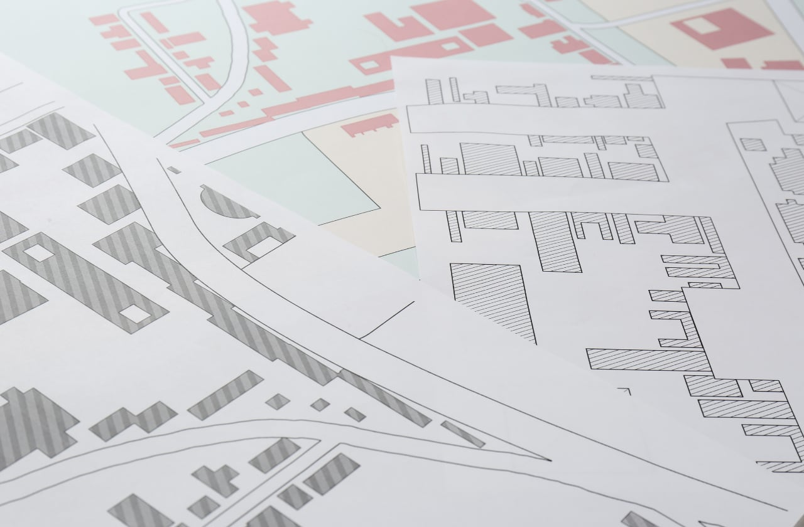
Fare Comunità
Incentivare opere a favore di famiglie, giovani, anziani, persone non autosufficienti o bisognose in collaborazione con ASL, Associazioni di volontariato e del terzo settore presenti sul territorio. Impegnarsi per istituire un ambulatorio medico integrativo al SSN con apertura settimanale a disposizione dei Cittadini. Promuovere forme di aggregazione giovanile mettendo a disposizione locali e strutture. Garantire la sicurezza del territorio in coordinamento con le forze dell’ordine. Costituire il Senato dei ragazzi per coinvolgere i giovani nella vita comunitaria. Promuovere l'istituzione di un servizio Asilo Nido, anche in collaborazione con i Comuni vicini. Mantenere il servizio pasti per anziani e cittadini in difficoltà con consegna a domicilio. Istituire un Centro di aggregazione ed eventi per gruppi di Terza Età. Istituire un servizio di consulenza per persone in difficoltà per pratiche burocratiche e di amministrazione domestica (tasse, utenze, etc.). Intervenire per potenziare il servizio di trasporto pubblico di linea. Realizzare, utilizzando le risorse del Lascito Fornara, una struttura destinata ad alloggi protetti per anziani autosufficienti, da assegnare in affitto. La struttura potrà essere dotata di servizi quali ambulatorio medico, mensa, sala lettura, lavanderia, e di aiuti per la pulizia degli alloggi e l'assistenza alla persona. Impegnarci per la creazione di uno sportello Bancomat per il prelievo di contanti.
Sviluppo Economico
Ridiscutere gli aumenti delle tariffe comunali già deliberati dall'Amministrazione uscente, in particolare per la gestione dei rifiuti (area ecologica). Avviare una revisione delle spese generali del Comune per ottenere risparmi che consentano di non aumentare tariffe e tasse. Potenziare e promuovere lo sviluppo del turismo culturale, paesaggistico ed enogastronomico, anche attraverso la richiesta di fondi del PNRR per interventi di digitalizzazione, innovazione e competitività. Istituire un tavolo di lavoro con commercianti, ristoratori, imprenditori agricoli, artigianali, industriali e con le Associazioni di categoria per favorire l'economia locale. Impegnarsi per ottenere agevolazioni per il recupero di immobili sfitti del centro storico per creare alloggi, nuove attività commerciali e ricettive (strutture B&B), anche ricorrendo ad agevolazioni e convenzioni tra Comune e imprese di settore. Supportare gli imprenditori che vorranno avviare nuove attività che possano portare nuovi posti di lavoro nel territorio comunale.
Promozione del Territorio
Fare rete con il territorio promuovendo la cooperazione con i Comuni limitrofi, la Provincia, la Regione, gli Enti e le Associazioni che operano per la valorizzazione dell'Alto Piemonte e dell'Alto Novarese. Creare un FORUM permanente delle Associazioni culturali, sportive, turistiche e di volontariato per incentivarne l'opera e coordinare le numerose iniziative e manifestazioni promosse sul territorio. Migliorare l'offerta turistica e favorire la creazione di nuova capacità ricettive. Potenziare e realizzare progetti per la manutenzione del patrimonio boschivo, dei sentieri e della loro segnaletica, in collaborazione con il Corpo Forestale, la Regione Piemonte e le Associazioni.
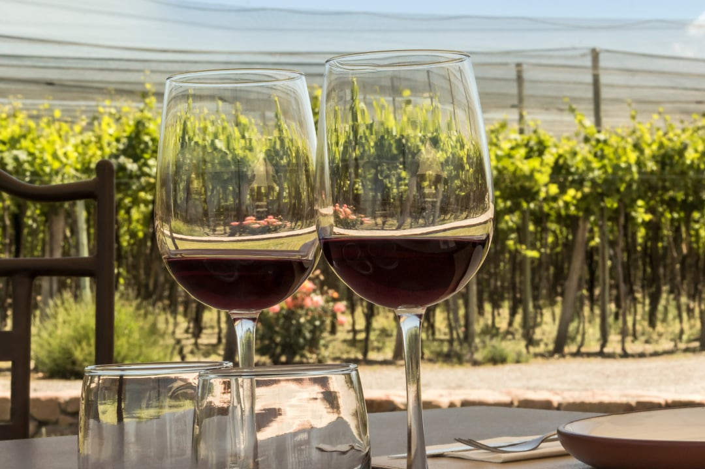
Sport
Valorizzare gli sport motoristici storici di Maggiora: Autocross e Motocross. Incentivare l'opera di tutte le Associazioni sportive attive sul territorio. Promuovere progetti e iniziative di nuove Associazioni per ampliare l'offerta sportiva e utilizzare al meglio le strutture esistenti.
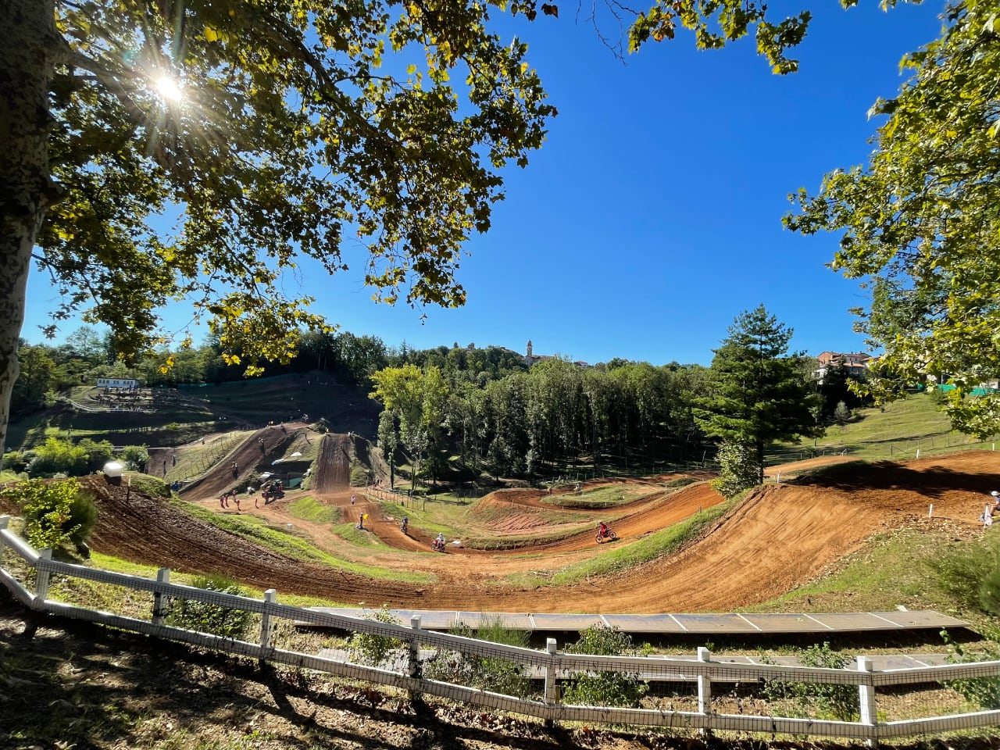
Scuola
Procedere all'efficientamento energetico e al potenziamento della connessione internet delledificio scolastico. Mantenere il servizio di distribuzione pasti mensa scolastica con sistemi di controllo qualità. Istituire corsi extra scolastici con programmi di bilinguismo e progetti CLIL. Garantire il servizio palestra per gli alunni delle scuole. Supportare, anche in collaborazione con le Associazioni, le iniziative di GREST e Scuola Estiva. Potenziare i servizi di pre e doposcuola ampliando gli orari in base alle richieste dell'utenza. Mantenere e incentivare la convenzione con il Comune di Boca per la Scuola Media.
Patrimonio Ambientale e Culturale
Favorire lo studio e la divulgazione del patrimonio culturale e ambientale di Maggiora attraverso pubblicazioni, giornali e altri media e con l'istituzione di una borsa di studio per tesi di laurea triennale, magistrale o di dottorato. Potenziare la conoscenza del patrimonio culturale attraverso e segnaletica innovativa di qualità. Valorizzare le nostre eccellenze per il turismo nazionale ed estero attraverso adeguata divulgazione social media. Coordinare il calendario di tutte le iniziative culturali con le Associazioni locali, i Comuni limitrofi e le realtà imprenditoriali del settore. Potenziare le attività aggregative di Biblioteca e SOMS attraverso mostre, serate di cinema, conferenze, corsi pratici e attività di sostegno alla cultura. Collaborare con le Università e il GEOPARCO UNESCO al fine di individuare geositi rappresentativi della storia e del patrimonio geologico.
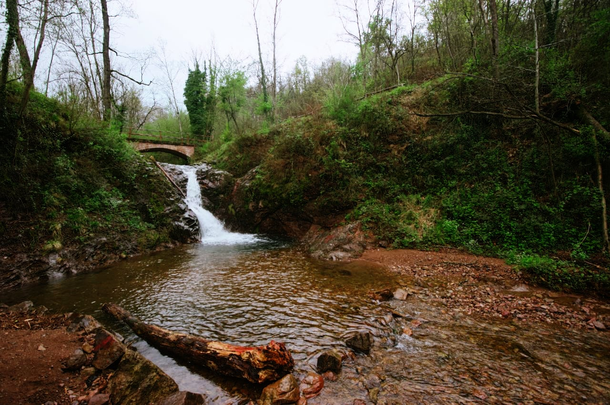
Candidato Sindaco
Francis Fogarty

Francis Fogarty, 42 anni, è nato e cresciuto a Maggiora, è sposato e ha due figli. Da oltre 27 anni lavora come enologo presso la storica azienda vitivinicola di famiglia, ottenendo numerosi riconoscimenti nazionali ed internazionali, tra cui l’inserimento tra i migliori 100 vini del mondo della prestigiosa guida americana Wine Enthusiast. Laureato con lode in Scienze Viticole ed Enologiche, ha collaborato con l’Università di Milano ottenendo il titolo di Dottore di Ricerca. Nel suo percorso professionale, Francis ha lavorato presso la Commissione Europea mettendo a disposizione le sue competenze tecniche e scientifiche nell’ambito della riforma della Organizzazione Comune del Mercato (OCM) vitivinicolo. Dal 2013 è membro del direttivo del Sesia Val Grande Global UNESCO Geopark, ente che contribuisce allo sviluppo sostenibile del territorio, partecipando al successo locale ed internazionale di questa realtà. Oltre che a collaborare con l’Università di Torino per progetti didattici e di ricerca, Francis svolge anche l’attività di docente di lingua inglese e, nel tempo libero, svolge volontariato in Parrocchia.
Candidati Consiglieri
Alberto Annichini
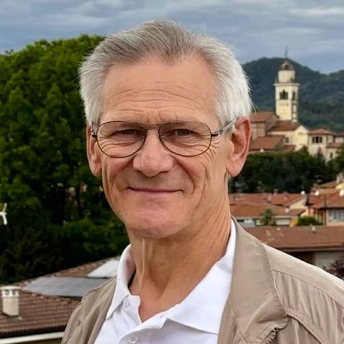 Pensionato, è impegnato come Volontario in numerose associazioni locali.
Silvio Borré
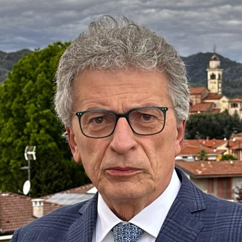 Medico Chirurgo. Direttore Divisione Malattie Infettive e Tropicali dell’ospedale Sant’Andrea di Vercelli e Direttore del Dipartimento Medico ASL VC.
Marco Carai
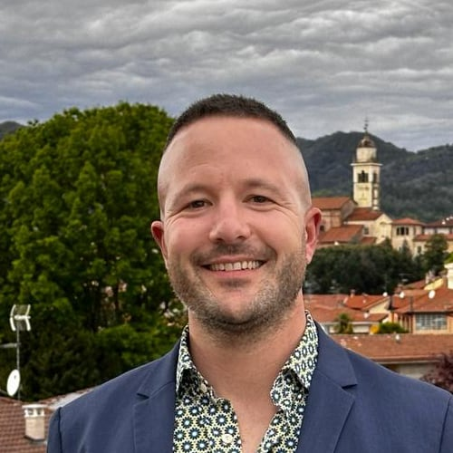 Geometra. Svolge la professione di Artigiano Idraulico.
Maria Paola Cerutti
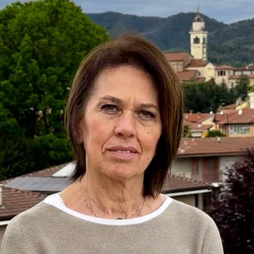 Artigiana in estetica a orientamento benessere-salute.
Giorgio Fornara
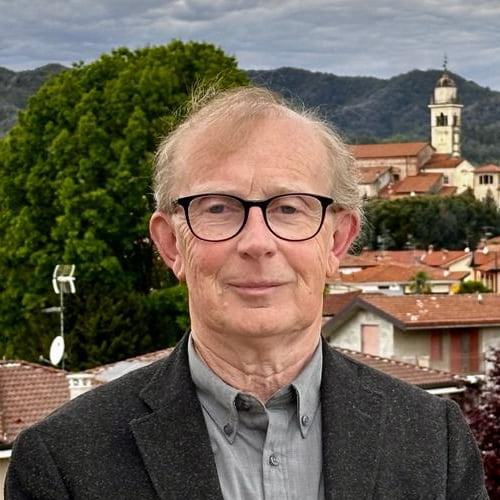 Laureato in Giurisprudenza. Segretario Comunale in pensione.
Angela Guglielmetti
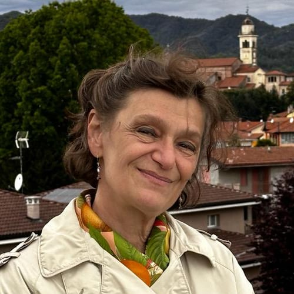 Laureata in Lettere e specializzata in Archeologia. Si occupa di studi e servizi per la conoscenza e la promozione del patrimonio archeologico e storico-artistico nazionale. Coordina le attività del TAM di Cureggio.
Daniele Marucco
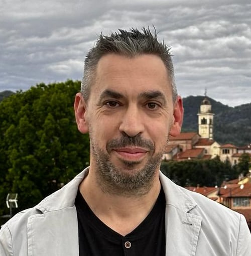 Perito Agrario Impiegato nel settore della Grande Distribuzione.
Franco Poggia
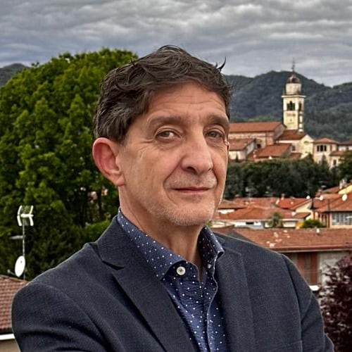 LRagioniere. Imprenditore, lavora nel settore automotive dal 1985. È titolare della concessionaria “L’Automobile” di Romagnano Sesia.
Lucia Solesio
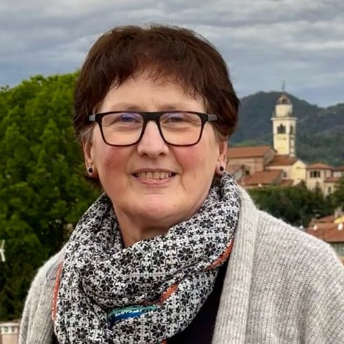 Ragioniera. Artigiana, è titolare dell’azienda BIESSEGOMMA di Maggiora, operante nel settore elettrico, automotive, acquedotti-gasdotti, etc.
Rosaria Tricarico
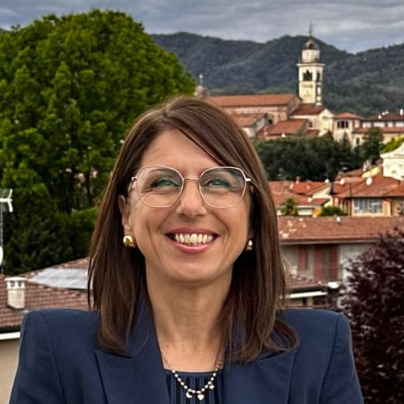 Diploma di Istituto Magistrale, lavora come Insegnante presso la scuola primaria di Maggiora.